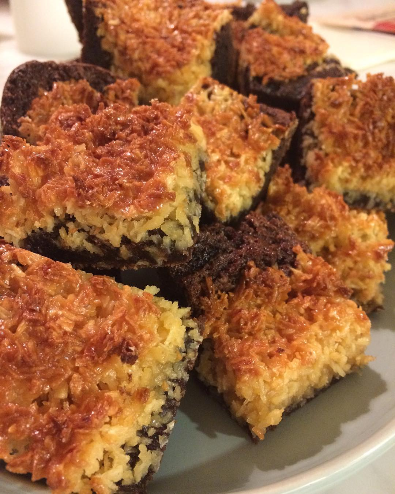

Mängd:
30-40 kakor
Du behöver:
Kladdkaka:
- 200 g smör
- 4 ägg
- 3-5 dl strösocker
- 3 dl vetemjöl
- 1 dl kakao
- 2 teskedar vaniljsocker
- 2 krm salt
Kokostosca:
- 200 g (5-6 dl) kokosflingor
- 1 dl ljus sirap
- 1-2 dl strösocker
- 1 1/2 dl vispgrädde
- 75 g smör
Gör så här:
- Sätt ugnen på 200 grader.
- Smält smöret på svag värme i en kastrull.
- Klä en långpanna eller en ugnsform, ca 27x37 cm med bakplåtspapper.
- Mät upp ägg och strösocker i en bunke. Vispa till en ljus, pösig smet, använd gärna elvisp.
- Tillsätt vaniljsocker, salt och kakao. Vispa ihop till en jämn smet.
- Tillsätt vetemjöl och det smälta smöret. Rör eller vispa snabbt ihop till en jämn smet (rör/vispa inte längre tid än att det är blandat).
- Bred ut kakan i långpannan med bakplåtspapper.
- Grädda mitt i ugnen i 200°C i ca 15 minuter. Kakan ska få lite färg, se bild. Gör under tiden kokostoscaglasyren i en kastrull.
- Häll kokosflingor, sirap, strösocker, grädde och smör i en kastrull och sätt på plattan på medelvärme och rör om när smöret smälter så det blir en jämn smet. Låt sedan koka upp och låt det sjuda ca 5 minuter.
- När kakan är klar och uttagen från ugnen, bred på kokostoscan och grädda ytterligare ca 10 minuter i ugnen tills kakan fått fin gyllenbrun färg.
- Låt kakan svalna. Skär sedan kakan i fyrkanter med en vass kniv.
Tips:
Kakan innehåller mycket socker, tänk dock på att detta är som en dubbel sats kladdkaka mängdmässigt. Vill man göra färre kakor kan man halvera receptet och ta en form som är ca 21x21 cm eller 18x25 cm.